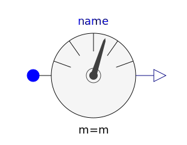
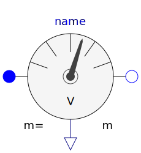
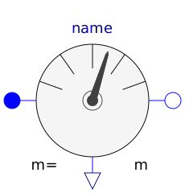
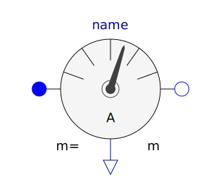

This package contains multiphase potential, voltage, and current sensors.
| Name | Description |
|---|---|
|  PotentialSensor | Multiphase potential sensor |
|  VoltageSensor | Multiphase voltage sensor |
|  VoltageQuasiRMSSensor | Continuous quasi voltage RMS sensor for multi phase system |
|  CurrentSensor | Multiphase current sensor |
|
|
Continuous quasi current RMS sensor for multi phase system |
| Multiphase instantaneous power sensor |